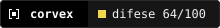

Dashboard e siti
Intestazioni, TLS, cookie, CORS, file esposti, iniezioni, librerie vecchie, API aperte, email falsificabili e sottodomini dirottabili.
Prove delicate, solo su ciò che è tuo.
Corvex mette alla prova le dashboard, i software e il computer su cui lavori.
Una squadra di agenti cerca le falle, ti avvisa e ti dice come chiuderle.
Quando è sicuro farlo, le corregge da sola.
Un bersaglio nuovo, la scansione che parte, le falle trovate e corrette, CORVUS che risponde.
Quaranta secondi dalla dashboard vera, su un sito di prova.
Intestazioni, TLS, cookie, CORS, file esposti, iniezioni, librerie vecchie, API aperte, email falsificabili e sottodomini dirottabili.
Prove delicate, solo su ciò che è tuo.
Segreti nel codice e nella cronologia git, crittografia debole, dipendenze vulnerabili e licenze incompatibili, infrastruttura come codice.
Un audit AI cerca le falle di logica e controllo accessi, e ogni pull request viene controllata prima del merge.
Malware nei file, programmi con falle note, file critici modificati e traffico della rete locale.
Lavora accanto a Defender e XProtect e può bloccare le minacce che trova.
Ogni agente ha un solo compito e lo fa bene. Si attiva solo se la sua competenza serve all'analisi, gli altri restano dormienti.
CORVUS coordina, passa a ciascuno le skill della sua biblioteca e compila il rapporto. Trascina la mappa e usa lo zoom per vedere tutta la squadra.
Il registro dal vivo mostra cosa sta provando ogni agente, cosa ha trovato e perché.
Alla fine ricevi un rapporto PDF col tuo marchio, in italiano o in inglese.

Per molte falle la correzione è già scritta.
La approvi tu e Corvex la applica tenendo una copia dell'originale, oppure apre una pull request su un ramo separato.
// JACKAL · cookie di sessione leggibile da JavaScript- res.cookie("sessione", token)+ res.cookie("sessione", token, {+ httpOnly: true, secure: true, sameSite: "strict"+ })
Cinque agenti controllano il computer che esegue Corvex.
Nessun file lascia la macchina.
Download, Scrivania, cartelle temporanee e avvio automatico, anche dentro gli archivi .zip.
Segnala anche i file critici cambiati: avvio automatico, chiavi SSH, hosts, estensioni del browser.
Ogni file nuovo viene controllato appena finisce di scriversi, e ogni 10 minuti ricontrolla i file critici.
Se vuoi, i file pericolosi finiscono subito in una quarantena ripristinabile.
Antivirus, firewall, cifratura del disco, aggiornamenti e protezioni del sistema operativo.
In più trova i programmi installati con falle note e ti dice a quale versione aggiornare.
Servizi raggiungibili dalla rete locale e connessioni verso indirizzi malevoli noti.
Può fermare il programma collegato e bloccare l'indirizzo, sempre annullabile.
Router, DNS e Wi-Fi a ogni scansione.
Nelle catture di rete cerca password in chiaro, tunnel DNS, malware che chiama casa e attacchi sulla rete locale.
windowsmacos// accanto a Defender e XProtect, mai al loro posto

L'assistente conosce i risultati della scansione aperta e ti spiega da dove iniziare.
Risponde con corvexai, il modello AI incluso in Corvex: è già pronto, non scegli né scarichi nulla e le domande restano sulla tua infrastruttura.
// misurato su casi che non ha mai visto in addestramento. Su codice reale del banco pubblico SastBench, ogni falla che ha confermato era vera
corvus_ai · corvexai-2.1CORVUSAbbiamo pubblicato il banco di prova con cui misuriamo Corvex: un sito, un progetto e una cattura di rete con 71 falle note, ognuno con un gemello pulito.
Ogni segnalazione sul gemello pulito conta come falso allarme.
// i bersagli sono gemelli del banco su cui Corvex è messo a punto: è il nostro riferimento, non una prova indipendente
github.com/CorvexDevelops →Corvex prova solo piattaforme di cui sei proprietario o per cui hai un'autorizzazione, e per i siti pubblici lo verifica prima di iniziare.
Gli agenti osservano e provano senza modificare né cancellare dati, con un ritmo leggero che non disturba i tuoi utenti.
Corvex gira sulla tua macchina o sul tuo server.
Codice, file, traffico di rete e risultati non vengono mai caricati altrove.
Password più codice temporaneo, sempre.
Le sessioni scadono da sole dopo un periodo di inattività.
Token, chiavi e codici del secondo fattore sono conservati cifrati o come impronte irreversibili.
Ogni aggiornamento è firmato digitalmente e si installa senza toccare i tuoi dati.
Stiamo rifinendo gli ultimi dettagli.
Download e piani apriranno a breve, con una versione gratuita per provarlo sui tuoi progetti.